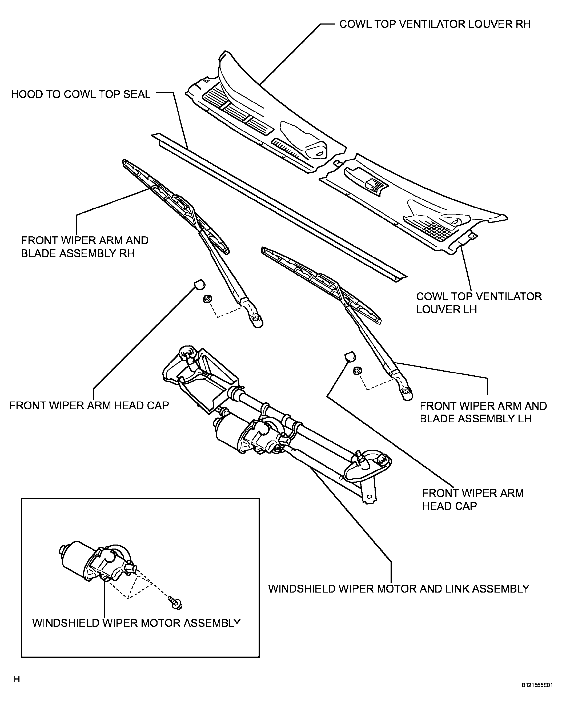

Home
>>
Scion
>>
2006
>>
xB Standard
>>
Repair and Diagnosis
>>
Accessories & Equipment
>>
Wiper/Washer Systems
>>
Wiper & Washer
>>
Front Wiper Motor And Link
>>
Components
Front Wiper Motor And Link: Components
Fig 1: Identifying Front Wiper Motor And Link Components

Courtesy of © TOYOTA, LICENSE AGREEMENT TMS1002